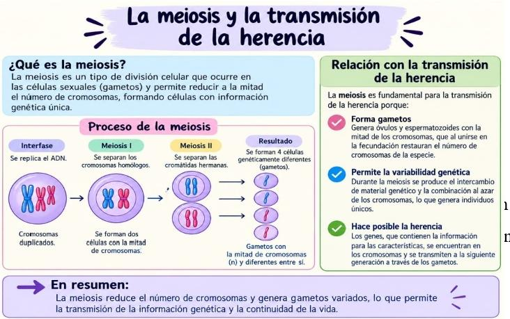
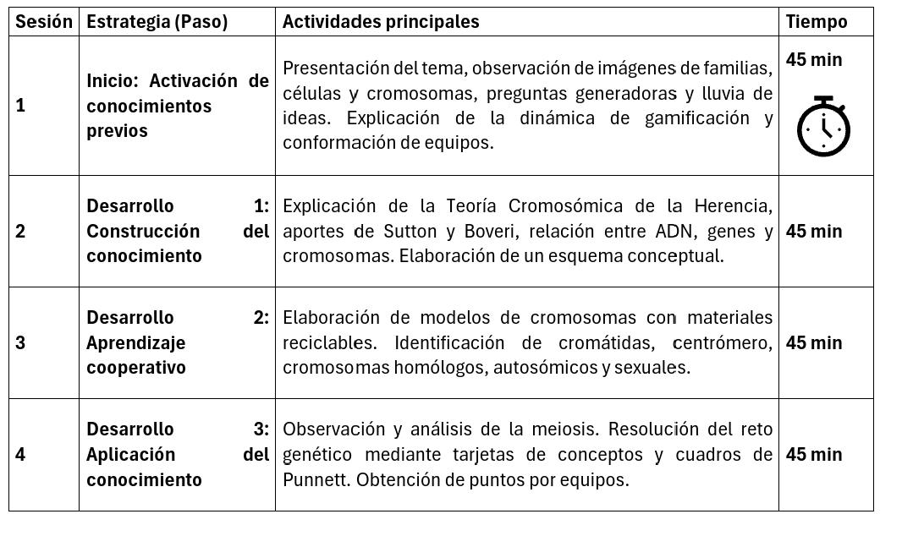
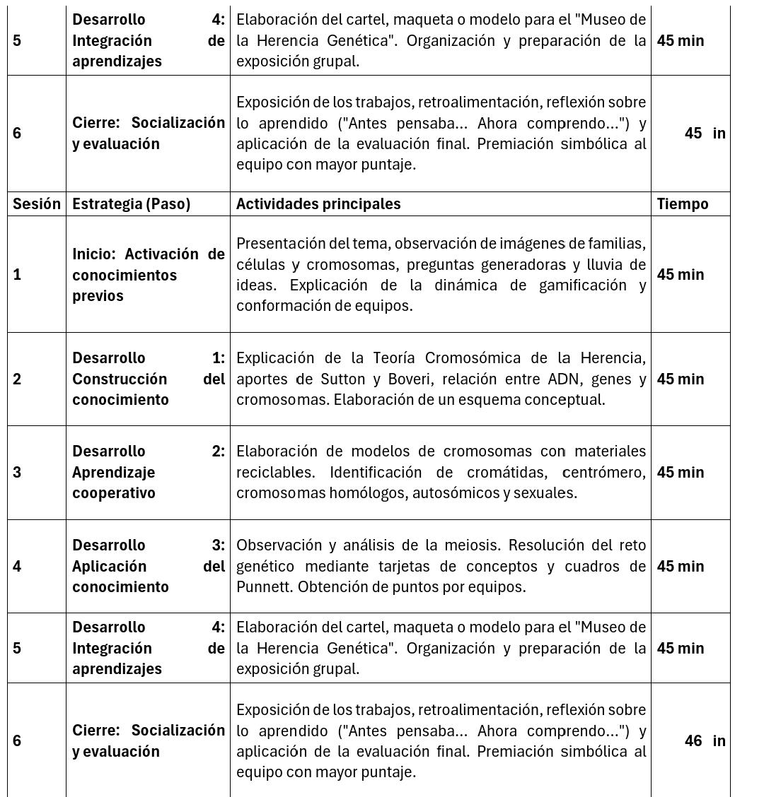

VI: Genética y Teoría Cromosómica
Contenido: Teoría cromosómica de la herencia
1. Tema de la unidad didáctica:
Descubriendo el secreto de la herencia: la teoría cromosómica.
2. Justificación
El estudio de la genética permite que los estudiantes comprendan cómo se transmiten las características hereditarias de una generación a otra, La teoría cromosómica de la herencia constituye un conocimiento fundamental para explicar la relación existente entre los genes, los cromosomas y la transmisión de los caracteres.
Además, esta unidad nos permitirá poder relacionar los conocimientos previos que poseen los estudiantes sobre la célula, el núcleo y la reproducción celular con nuevos aprendizajes relacionados con los cromosomas y la herencia. De esta manera, podrán comprender que los cromosomas contienen la información genética y que su comportamiento durante la división celular está relacionado con la transmisión de los caracteres hereditarios.
3. Objetivos de aprendizaje
3. Objetivos de aprendizaje
1. Explicar la teoría cromosómica de la herencia, relacionando los genes con los cromosomas como portadores de la información genética.
2. Identificar la estructura y función de los cromosomas, diferenciando cromosomas homólogos, autosómicos y sexuales.
3. Analizar la importancia de la meiosis y de los patrones de herencia en la transmisión de las características hereditarias.
4. Contenidos
a) Teoría cromosómica de la herencia: aportes de Sutton y Boveri.
b) Cromosomas, genes, ADN, cromosomas homólogos, autosómicos y sexuales.
c) Meiosis y patrones básicos de herencia (dominancia, recesividad y herencia ligada al sexo).
7.3 Contenidos procedimentales
a) Elaboración e interpretación de esquemas sobre ADN, genes, cromosomas y herencia.
b) Construcción de modelos sencillos de cromosomas para identificar sus partes y tipos.
c) Resolución de problemas básicos de genética utilizando cuadros de Punnett e interpretación de patrones de herencia.
7.4 Contenidos actitudinales
a) Interés y curiosidad por comprender los procesos de la herencia genética.
b) Responsabilidad y participación activa durante las actividades individuales y grupales.
c) Respeto por las opiniones de los compañeros y disposición para el trabajo cooperativo.
5. Competencias o capacidades a desarrollar
1. Pensamiento científico: explica fenómenos relacionados con la herencia y la genética.
2. Pensamiento crítico: analiza la relación entre ADN, genes, cromosomas y herencia.
3. Comunicación científica: expresa ideas y conceptos utilizando vocabulario científico de forma oral y escrita.
4. Trabajo colaborativo: participa de manera responsable en actividades y proyectos grupales.
5. Resolución de problemas: interpreta y resuelve situaciones sencillas relacionadas con la transmisión hereditaria.
6. Estrategias didácticas
7. Estrategias didácticas
Para el desarrollo de la unidad se implementará una estrategia basada en la gamificación participativa y el aprendizaje cooperativo, procurando que los estudiantes sean protagonistas de su propio aprendizaje.
“La gamificación describe la incentivación de la participación de las personas en contextos y actividades no relacionadas con el juego mediante mecánicas de estilo de juego” (Rasure, 2025).
Se utilizarán las siguientes estrategias:
a) Gamificación mediante retos y acumulación de puntos.
b) Aprendizaje cooperativo en equipos.
c) Preguntas generadoras para activar conocimientos previos.
d) Análisis de imágenes, esquemas y modelos de cromosomas.
Se organizarán equipos de trabajo y se plantearán diferentes retos relacionados con la genética. Los estudiantes podrán obtener puntos por:
1. Participación.
2. Respuestas correctas.
3. Trabajo cooperativo.
4. Exposición.
5. Cumplimiento de las actividades.
La finalidad de la gamificación no será solamente obtener puntos, sino motivar, integrar y favorecer la comprensión de los contenidos.
7. Actividades de aprendizaje
7.1 Actividades de inicio
Actividad 1: ¿Qué sabemos sobre la herencia?
El docente presenta imágenes de familias, células y cromosomas para activar los conocimientos previos. Mediante preguntas generadoras, los estudiantes expresan sus ideas sobre la herencia, los genes y los cromosomas, realizando una lluvia de ideas.
Evaluación: Participación y respuestas orales.
7.2 Actividades de desarrollo
Actividad 2: Conociendo la teoría cromosómica
El docente explica la estructura de los cromosomas, la relación entre ADN, genes y cromosomas, así como los aportes de Walter Sutton y Theodor Boveri. En equipos, los estudiantes elaboran un esquema que relacione ADN → genes → cromosomas → herencia.
Actividad 3: Construimos un modelo de cromosomas
En grupos, los estudiantes elaboran un modelo de cromosomas homólogos utilizando materiales reciclables. Identifican cromátidas, centrómero, cromosomas homólogos y diferencian cromosomas autosómicos y sexuales.
Evaluación: Lista de cotejo.
Actividad 4: La meiosis y la transmisión de la herencia
Actividad 4: La meiosis y la transmisión de la herencia
Los estudiantes observan un esquema de la meiosis y analizan el comportamiento de los cromosomas durante este proceso. Luego responden preguntas y relacionan la meiosis con la transmisión de la información genética.

ordenan tarjetas con conceptos (ADN, gen, cromosoma, meiosis y herencia) y resuelven problemas sencillos utilizando cuadros de Punnett para identificar diferentes patrones de herencia.
Evaluación: Guía de observación y rúbrica.
7.3 Actividad de cierre
Actividad 6: Museo de la herencia genética
Cada grupo elabora un cartel donde explique la relación entre ADN, genes, cromosomas, meiosis y herencia. Finalmente, realizan una exposición y responden una evaluación breve para comprobar los aprendizajes alcanzados.
Evaluación final: Rúbrica, exposición y prueba escrita.
8. Evaluación
8.1 Evaluación diagnóstica
Se realizará al inicio de la unidad para identificar los conocimientos previos de los estudiantes sobre genética y herencia.
Se evaluará:
a) Conocimientos previos sobre genes, cromosomas y herencia.
b) Participación en la lluvia de ideas.
c) Respuestas a las preguntas generadoras.
Instrumento:
a) Guía de preguntas.
b) Observación directa.
8.2 Evaluación informativa
Se desarrollará durante todas las sesiones para dar seguimiento al proceso de aprendizaje.
Se evaluará:
a) Participación activa en las actividades.
b) Trabajo cooperativo.
c) Elaboración del modelo de cromosomas.
d) Interpretación de esquemas de meiosis.
e) Resolución de problemas genéticos.
f) Elaboración del mapa conceptual.
g) Participación en los retos de gamificación.
h) Exposición grupal.
Instrumentos:
a) Lista de cotejo.
b) Guía de observación.
c) Rúbrica.
d) Registro de participación.
8.3 Evaluación sumativa
Al finalizar la unidad, los estudiantes presentarán el producto final "Museo de la Herencia Genética", donde elaborarán un cartel, maqueta o modelo explicativo sobre la Teoría Cromosómica de la Herencia y realizarán una exposición. Además, resolverán una prueba escrita con preguntas de selección múltiple, verdadero/falso y desarrollo breve.
Criterios de evaluación
Criterio Valor
Explica correctamente la teoría cromosómica de la herencia. 20
Relaciona ADN, genes, cromosomas, meiosis y herencia. 20
Elabora un modelo o cartel claro, organizado y creativo. 20
Participa y trabaja de forma cooperativa durante las actividades. 20
Comunica y argumenta sus ideas durante la exposición y la evaluación escrita. 20
Instrumentos:
a) Rúbrica.
b) Lista de cotejo.
c) Prueba escrita.
d) Autoevaluación y coevaluación.
9. Temporización
La presente unidad didáctica se desarrollará en un total de 4.5 horas de clases, distribuidas en seis sesiones de 45 minutos cada una. La secuencia de las actividades responde a una organización progresiva del aprendizaje, iniciando con la exploración de los conocimientos previos de los estudiantes y avanzando hacia la construcción, aplicación y evaluación de los contenidos relacionados con la Teoría Cromosómica de la Herencia.


- 10. Atención a la diversidad
Con el propósito de atender las diferentes necesidades, intereses y ritmos de aprendizaje de los estudiantes, durante el desarrollo de la unidad didáctica se implementarán las siguientes estrategias:
a) Utilización de un lenguaje claro, sencillo y acorde con el nivel de los estudiantes.
b) Presentación de los contenidos mediante imágenes, esquemas, videos y modelos de cromosomas para favorecer el aprendizaje visual.
c) Desarrollo de actividades con diferentes niveles de complejidad, permitiendo que cada estudiante avance según sus capacidades.
d) Organización de trabajos individuales, en parejas y en equipos cooperativos para fortalecer la participación de todos.
e) Acompañamiento y orientación personalizada a los estudiantes que presenten dificultades durante las actividades.
f) Uso de materiales manipulativos (cartulina, plastilina, lana y material reciclable) para facilitar la comprensión de los conceptos.
g) Flexibilidad en las formas de participación y evaluación, permitiendo responder de manera oral, escrita, mediante dibujos, esquemas o modelos.
h) Asignación de roles dentro de los equipos para promover la inclusión y la participación activa de todos los estudiantes.
i) Refuerzo y retroalimentación continua de los contenidos fundamentales antes de avanzar a nuevos aprendizajes.
j) Reconocimiento del esfuerzo, la creatividad y el trabajo colaborativo mediante la estrategia de gamificación, favoreciendo la motivación y la autoestima de los estudiantes.